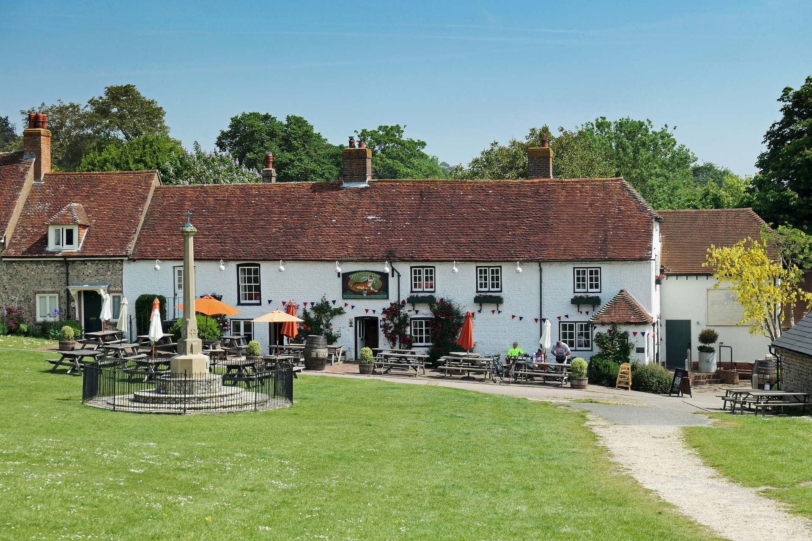
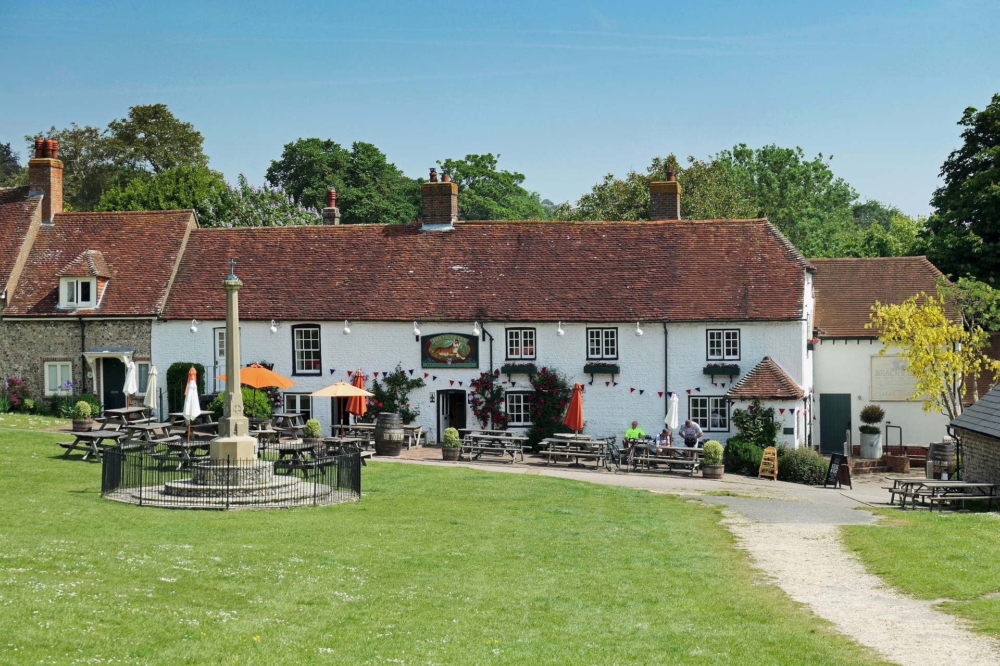

Menu
Fish and Chips $8
Fresh caught cod off the coast of the northern isles of our homeland; the United Kingdom. Served with thickly sliced potato spears deep fried in light soybean oil
Bangers and Mash $7
Sausages and mashed potato, with peas and gravy.
Toad in the Hole $7
Sausages in Yorkshire pudding batter served with gravy and vegetables.
Sunday Roast $10
Roasted beef, roast potato, Yorkshire pudding, stuffing, vegetables (roasted: parsnips, Brussels sprouts, peas, carrots, and broccoli) and gravy.
Shepards's Pie $9
Ground lamb cooked with vegetables and Guinness for an extra flavor boost, then topped with fluffy mashed potato and baked.
Our Story
The Galloping Goose was established in 1873 by my great-grandmother, Marike. She inherited from her father a 23 acre apple orchard and his prized goose Gertrude at the age of 16. In the beginning she would sell cider and pies on the edge of town to the villagers. Eventually she saved enough turn the farmhouse at the end of her land into The Galloping Goose. Over the last century The Galloping Goose has been handed down to the eldest daughter who keeps the legacy of the pub alive.
Drinks
Specialty
Galloping Goose Cider
Cider brewed from Galloping Goose apple orchard.
The Sidecar
Cognac, orange liqueur and lemon juice.
Pimm's Iced Tea
Chill brewed orange pekoe tea, fresh lemon juice, Pimm's No. 1 and agave nectar.
Beer
Belhaven Scottish Stout
Harvey's Imperial Extra Double Stout
Morland Old Speckled Hen
Wychwood Hobgolin
Fuller's London Porter
Lovibonds Lagerboy
Carling
Worthington White Shield
Bateman's Rosey Nosey
Desserts
Apple Cake
Slim, moist cake made with apples from our own orchard, that is served warm with a dollop of fresh cream.
Apple Pie
Classic apple pie served hot with custard sauce.
Apple Crumble
The crumble is made with Bramley apples and served fresh from the oven with clotted cream.
Spotted Duck
Tender steamed pudding dotted with succulent black currants is drizzled with a luxuriously rich and creamy vanilla custard.
Eton Mess
Crunchy meringue, whipped cream and fresh strawberry sauce with a splash of ginger cordial adds a twist to this classic dessert
Our Establishment


 
